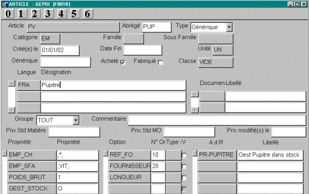
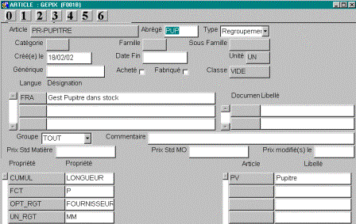
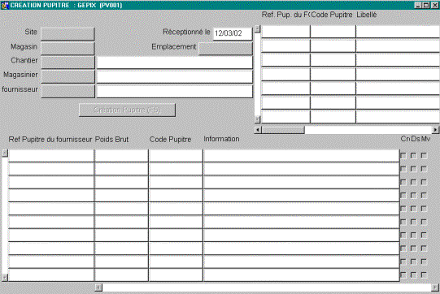
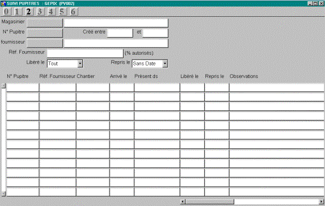
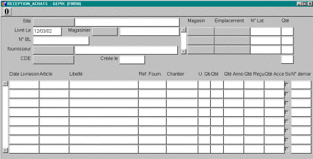
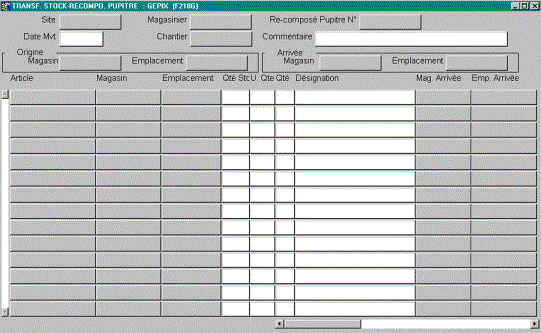
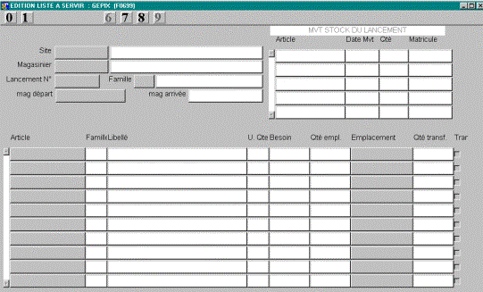

Retour
Accueil usine
Accueil agence
Prise en main
Requêtes (F2)

Sites Internet
|
|
Gestion des pupitres |

|
INFO ; En décembre 2020, la gestion des pupitres sera remplacée par la gestion des contenants. |
|||||||||||||||
I. Création Pupitre a) Paramétrage :Tous les pupitres sont issus du même générique. Paramètre : GENERIQUE_PUPITRE
b) Regroupement Stock :Les pupitres sont gérés en stock. Possibilité de consultation par fournisseur, grâce à l’option de regroupement fournisseur.  c) Création :
: Pour information , historique des pupitres du fournisseur (en haut à gauche). Etapes lors de la création :
Après création les trois cases à cocher résume le traitement effectué. IL EXISTERA UN SEUL CODE PUPITRE POUR LE COUPLE REF_FO, FOURNISSEUR. Nota : Lors de la création,
|
||||||||||||||||
II. Suivi Pupitre :d) Par écrans de Stock :Un pupitre est un article géré en stock, on peut donc utiliser les écrans de consultation de stock :
De plus, possibilité d’éditer le contenu d’un pupitre (voir même dans certain cas d’un simple emplacement), ou/et d ‘éditer le contenu de tous les emplacements dans magasin. e) Ecran de suivi :
Un pupitre est « Libérable » s’il est VIDE.
Pour pouvoir effectuer un retour fournisseur, le pupitre doit être au préalable libéré. |
||||||||||||||||
III. Réception Fournisseur :
|
||||||||||||||||
IV. Commande de S/T :
Lors de la saisie de l’expédition, si on expédie le pupitre, il faut également expédier son contenu. Suppression du pupitre de l’organigramme.
|
||||||||||||||||
V. Commande de Transfert Inter - Site :Idem Cde S/T
|
||||||||||||||||
VI. Recomposition de pupitre : Par défaut, le pupitre est utilisé (créer dans organigramme) uniquement dans le magasin de réception. Lors d’un transfert entre magasin, on perd le lien pupitre / marchandise. f) Recomposition Pupitre :Avec ajout dans l’organigramme g) Transfert Pupitre :Avec son contenu. Suppression de l’organigramme. h) Transfert entre magasin :
|
||||||||||||||||
VII. Liste à Servir : Possibilité de transférer des pupitres vers le magasin de production. |
||||||||||||||||
|